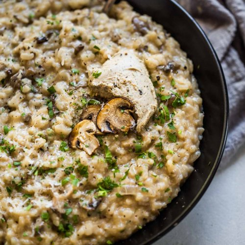

Risotto

Descripción
Hace años que hago este risotto de ajo negro con crujiente de Parmesano y nunca deja de
sorprenderme su suave textura y su potente sabor. Tiene poca complicación y es muy lucida,
así que apostar por ella es un valor seguro.
Ingredientes:
- 100g de cebolla
- 700ml de caldo de verduras
- 10 dientes de ajo negro
- 40g de mantequilla
- 60g de queso parmesano
- 200g de arroz arobiro
- 1 lima
- 50ml de vino blanco seco
- sal a gusto
Elaboración:
-
Rallamos el queso Parmesano y preparamos los crujientes colocando cuatro pequeños montoncitos
sobre una baandeja de horno cubierta con un silpat o con papel sulfurizado
-
Horneamos a 180ºC durante 5 minutos o hasta que comiencen a dorarse. Dejamos enfriar
hasta el momento de servir.
-
Trituramos los dientes de ajo junto con el caldo de verduras, lo transferimos a una cacerola
y lo mantenemos caliente a fuego muy suave mientras continuanos prepararando el resto de
ingredientes.
-
pelar y cortar la cebolla brunoise fina y pocharla en una cacerola usando la mitad
de la mantequilla como grasa.
-
Cuando la cebolla esté traslúcida añadimos el arroz, removemos y sofreímos un minuto.
-
Agregamos el vino blanco, aumentamos la potencia del fuego y dejamos que se evapore el alcohol
-
Añadir el caldo cazo a cazo, sin añadir el siguiente hasta que el arroz haya absorbido todo el líquido
-
Removemos durante todo el proceso para que el arroz suelte su almidón y ligue los granos,
convirtiéndolo en un cremoso bocado.
-
A los 18 minutos nuestro risotto estará casi listo y solo nos quedará incorporar el queso
Parmesano rallado y el resto de la mantequilla. Removemos, ajustamos el punto de sal si lo
consideramos necesario y dejamos reposar unos minutos antes de servir con los crujientes de
Parmesano y ralladura de lima por toda la superficie.
Volver al inicio